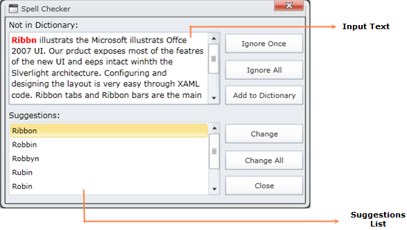

Spell Checking engine allows you to find misspelled words in any control’s text values. Using SpellCheckingDialog, we can perform spell checking on any input control and it will also provide sugggestions for the misspelled words.
Use Case Scenarios
You can use Spell Checker to correct spelling mistakes in any input text.
Appearance of the SpellCheckDialog
Spell Checking engine contains in-built dialog for checking spellings.

Figure 35: Spell Checking Dialog
The Input Text is the text given as input to the spell checker for checking spellings. The word that is spell-checked will be highlighted in Red color
The Suggestions List is the list box, which will show the suggestions for the currently spell checked word.
Adding Spell Checker to an Application
SpellChecker is a spell checking engine. Using SpellCheck method, you can check spellings for any text. This method will return the suggestions available for the input text. So for checking spellings for any input text, we need to use the following code snippet.
|
[C#] SpellChecker SpellCheck = new SpellChecker(); SpellCheck. SpellCheck(“pass the input text that needs to be spell checked”);
|
 Features of Spell
Checker
Features of Spell
Checker